SEUM MEDIA
상담 신청10년 차 PD와 영상 20개 깔기 · 3개월 과정
일방적인 강의가 아닙니다. 소수정예로 모여 기획부터 촬영, 편집, 첫 영상 발행까지 직접 코칭합니다. 끝나고도 1년간 함께 갑니다.
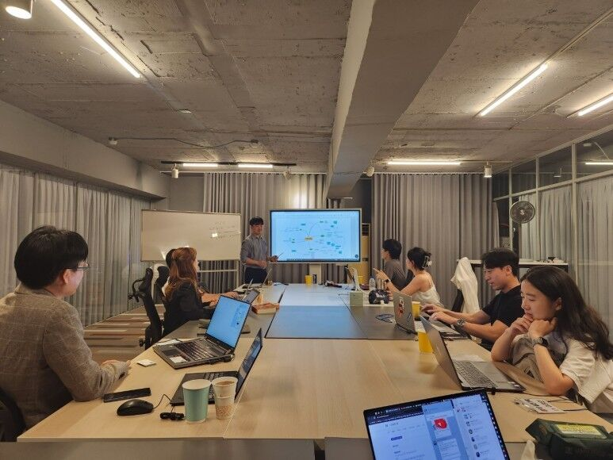
강사 소개
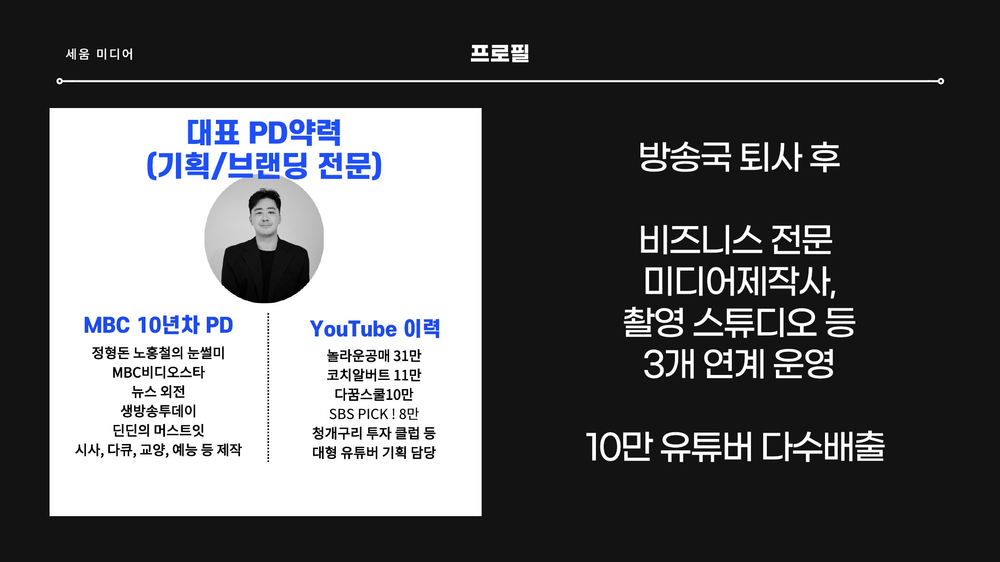
최근에도 만들고 있습니다
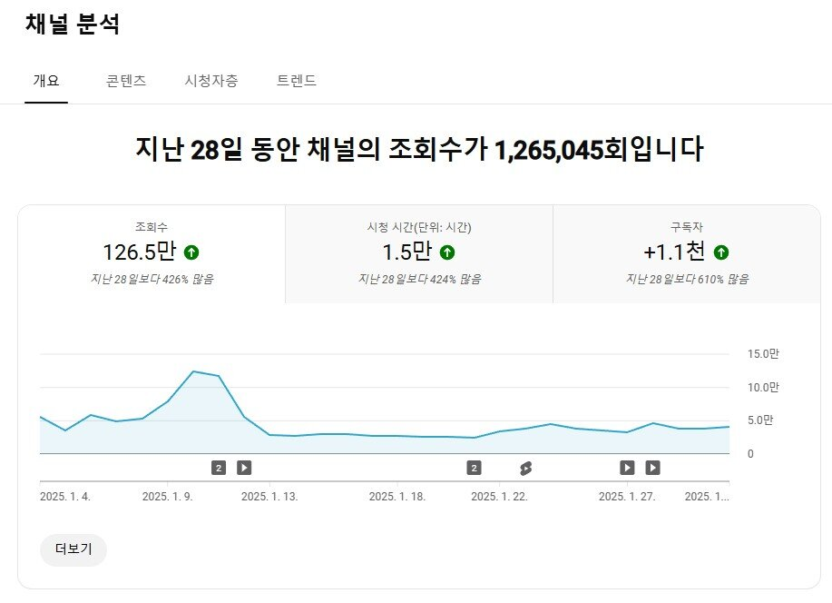
신생 채널 1
28일 만에 100만 조회수 + 구독자 1,100명
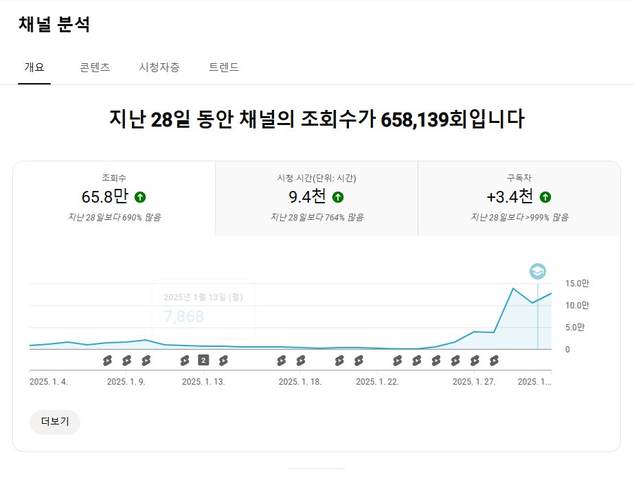
신생 채널 2
영상 한 개로 40만 조회수 + 구독자 3,000명
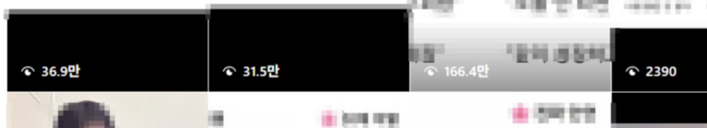
제자 채널
한 달 만에 숏폼 조회수 2,000 → 40~50만
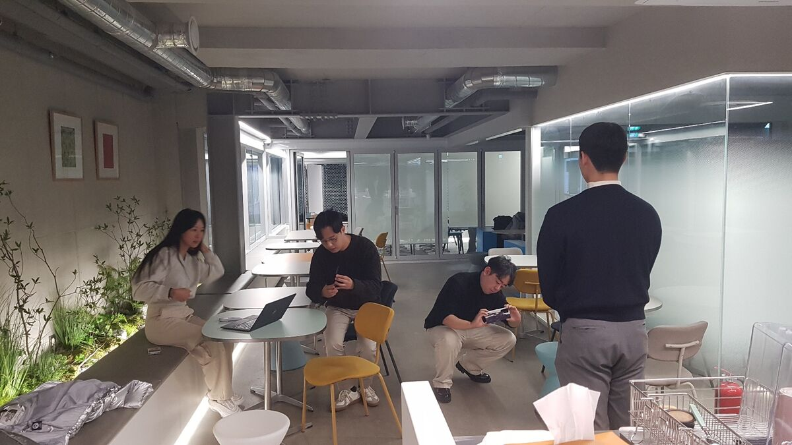
01
소수정예로 한 명씩 옆에서 봐드립니다.
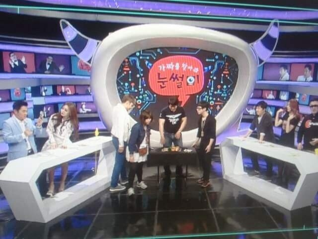
02
현장에서 검증된 기획·촬영·편집 방식을 그대로.
03
기업 고가 컨설팅 내용을 개인 과정에 담았습니다.
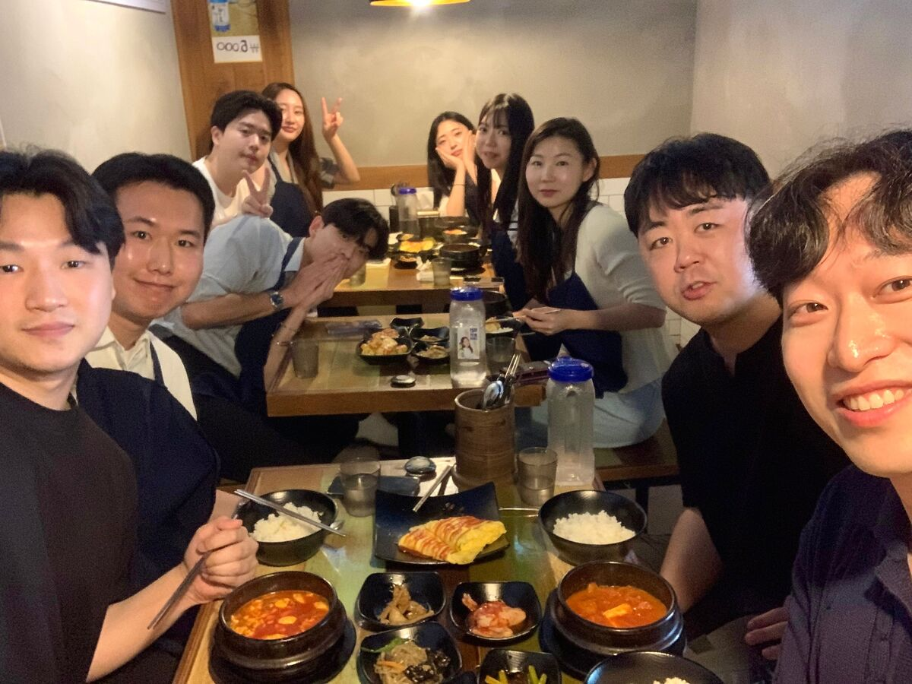
04
도전을 응원하기 위해 비용 장벽도 낮췄습니다.
4주 집중훈련 + 1개월 20단계 챌린지 + 1개월 내 팬 1,000명 만들기 챌린지, 그리고 1년 케어
1개월차
기획 · 촬영 · 편집을 주차별로 직접 실습
2개월차
미션을 하나씩 깨며 스스로 할 수 있는 힘을 기릅니다
3개월차
영상을 쌓고 채널을 키우는 실전 챌린지
종료 후 1년
멤버십 단톡방과 정기 모임으로 계속 함께
왜 하필 1,000명인가
구독자 숫자가 아니라, 내 이야기를 기다리는 사람이 몇 명인지가 돈과 기회를 만듭니다.
구독자 6천대 사업 채널
월 순수익 1억 이상
분야 전문가 5천 명 연대
구독자 7천대 부동산 채널
연매출 80억 동종업계
투자자 2천 명 연결
그래서 3개월차 목표는 “내 팬 1,000명”입니다.
멈추지 않는 커리큘럼
많은 수강생들이 제 머리를 빌려 쓰는 만큼, 제가 모르는 조각이 하나도 없어야 한다고 생각합니다.
지금도 3개월 1,200만원 이상 영상 제작대행을 직접 진행합니다. 현장에서 통하는 최신 방식을 가장 먼저 알게 됩니다.
워낙 호기심도 많고 혹시나 빠진 조각이 있나 싶어, 저 또한 매년 300만원대 타 강의들을 사서 비교해 보기도 합니다.
새로 알게 된 것은 멤버십 멤버들에게 매번 나눕니다. 과정이 끝난 뒤에도 계속 업데이트됩니다.
중학생도 알아들을 쉬운 예시로, 매주 결과물이 남습니다.
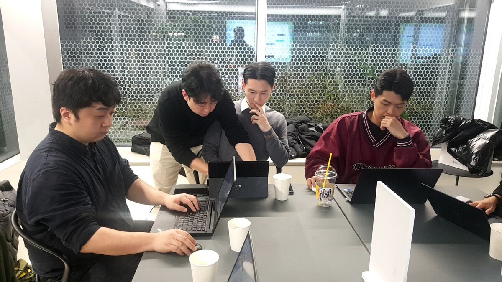
1주차 · 기획 1
결과물: 내 제목 10개
2주차 · 기획 2
결과물: 영상 기획 10개 + 채널 확장 지도
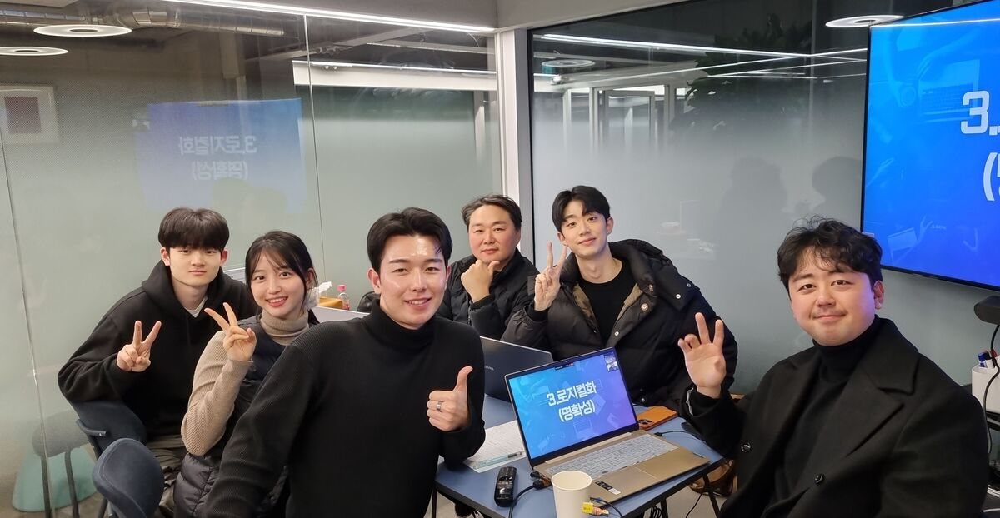
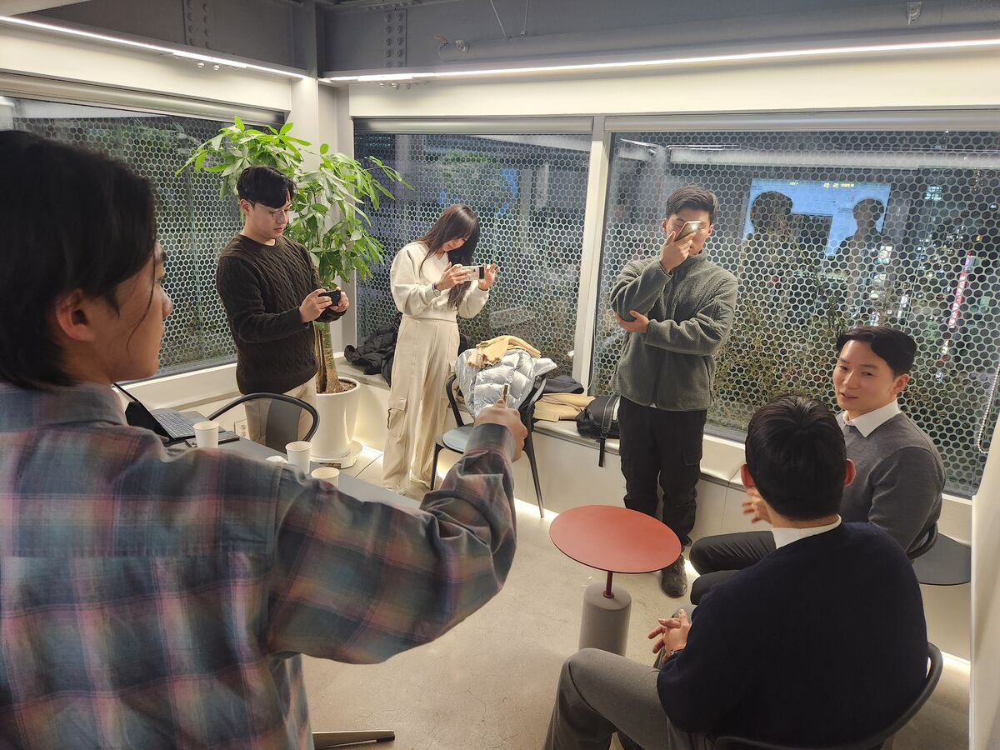
3주차 · 촬영
결과물: 첫 촬영본
4주차 · 편집
결과물: 첫 영상 발행
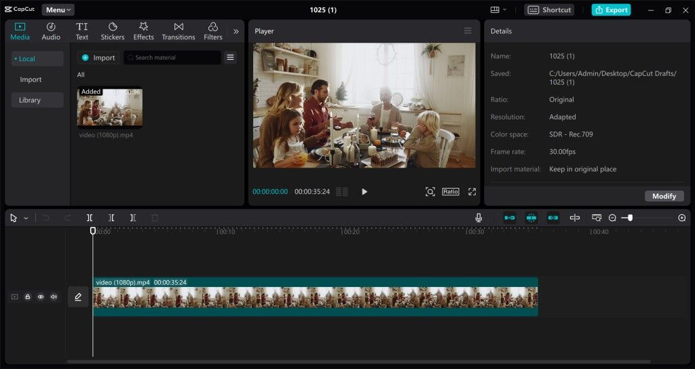
집중훈련에 이어 4주 동안 내 영상 20개를 깔아놓는 20단계 미션. 미션을 열고, 영상을 올리고, 제출 완료로 바꾸면 끝. 혼자서도 꾸준히 할 수 있게 설계했습니다.
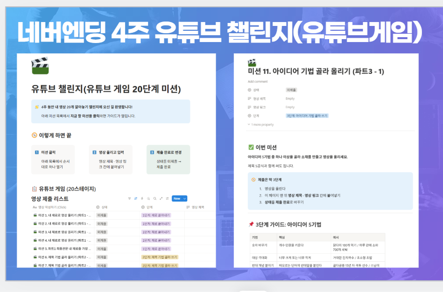
1단계
재료 쏟아내기
2단계
제목 기법 골라 쓰기
3단계
아이디어 기법 골라 쓰기
20개 완주
내 채널에 영상 20개
종료 후 1년 질문 케어. 멤버십 단톡방과 정기 미디어 네트워킹으로 인플루언서, 영상인들과 계속 교류합니다.
혼자 하면 한 달 만에 멈춥니다. 각 기수 분들이 함께 모여 서로 으샤으샤 끌어주는 자리를 1년 동안 열어드립니다.
1년 멤버십 전용
크리에이터 상급자 AS 강의
기초를 마친 뒤 막히는 지점을 다시 잡아드립니다.
전 기수 초대
기수 통합 네트워킹 모임
앞 기수 선배들과 뒤 기수 동료들이 한자리에 모입니다.
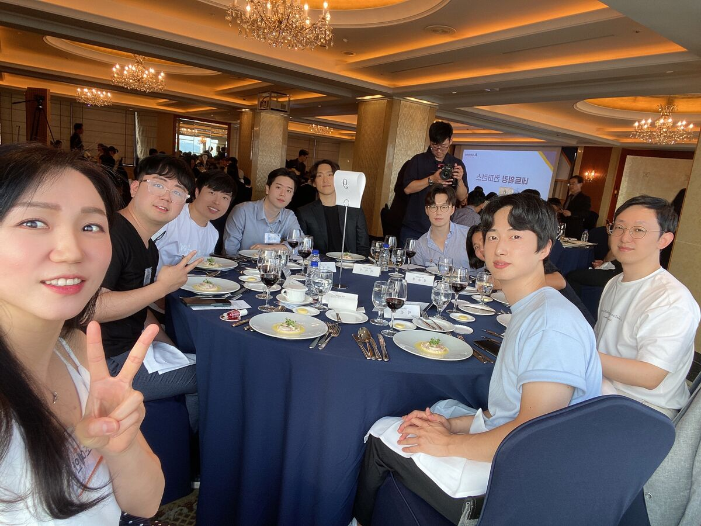
이피디 크리에이터 100 멤버십
장소 강남 역삼동 공간
이번 기수 남은 정원 3명
개인 프로젝트라 마감 시 다음 모집은 미정입니다